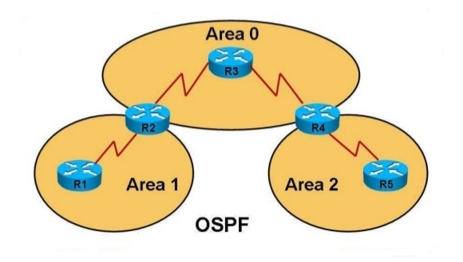

Тъй като Open Shortest Path First (OSPF) е отворен стандартен протокол, много хора са допринесли за неговия дизайн и хиляди и хиляди хора са го прегледали. В този раздел ще бъдат подчертани някои функционални компоненти на този вътрешен протокол за шлюз (IGP) и използването му във вашите мрежи. Тъй като всеки IGP се държи малко по-различно от другите IGP, трябва да сте запознати с няколко термина OSPF, които се използват с протокола, преди да преминете към командите за конфигуриране. Този раздел се опитва да изясни основните термини и понятия, с които трябва да сте запознати.
OSPF е link-state протокол
В протоколите за състояние на връзката частта за връзка на протокола е интерфейсът на рутера, докато състоянието е как се отнася към съседите си, което би включвало неговия адрес и информация за мрежата. Преди да започнете, разгледайте този кратък списък с термини, използвани в този раздел: Реклама за състоянието на връзката (LSA): проста актуализация на състоянието на връзката на рутера, така че такава ще бъде изпратена, когато връзката е свързана, прекъсната или по друг начин променена Топологична база данни: Таблица в паметта на рутера, която съдържа информация за връзки за всички известни рутери (вижте Глава 6 на тази миникнига) SPF алгоритъм: Математическо изчисление, което използва алгоритъма на Dijkstra (наречен на холандски математик) за определяне на най-краткия път до дестинациите и което е силно приложено към компютърните мрежи SPF дърво: Изброяване на всички маршрути до всяка дестинация с ред на предпочитание Всеки рутер, който е конфигуриран за OSPF зона, изпраща на редовни интервали реклама за състоянието на връзката (LSA). Цялата тази информация за състоянието на връзката се съхранява в топологична база данни, след което се прилага SPF алгоритъм към данните в базата данни. Този процес генерира SPF дърво, изброяващо всички маршрути до всяка дестинация с ред на предпочитание. След това предпочитаната поръчка се съхранява в таблицата за маршрутизиране, което дава на рутера най-добрия избор за маршрутизиране до тези дестинации. Стъпките по-долу илюстрират този процес:

Стъпка 1
Маршрутизаторите в обмен на данни за състоянието на връзката започват процеса.
Стъпка 2
Всеки рутер съхранява информацията за състоянието на връзката в паметта, като използва структура, наречена топологична таблица или топологична база данни.
Стъпка 3
Рутерът обработва всички данни в таблицата на топологията и използва алгоритъма на Dijkstra, за да определи всички маршрути до всички мрежи, както и маршрутите с най-ниска цена.
Стъпка 4
Цялата тази информация се съхранява в SFP дървото, идентифицирайки предпочитаните и второстепенните маршрути.
Стъпка 5
Информацията за маршрутизиране се разпространява в таблицата за маршрутизиране.
Какво представлява алгоритъмът на Дийкстра?
Ами ако ви бъде предоставена графика на възли, където всеки възел е свързан с няколко други възли с различни разстояния? Сега, ако започнете от един от възлите в графиката, кой е най-краткият път до всеки друг възел в графиката?
Е, просто обяснено, алгоритъм, който се използва за намиране на най-краткото разстояние или път от началния възел до целевия възел в претеглена графика, е известен като алгоритъм на Dijkstra.
Този алгоритъм прави дърво с най-краткия път от началния възел, източника, до всички останали възли (точки) в графиката.
Алгоритъмът на Дайкстра използва теглата на ръбовете за намиране на пътя, който минимизира общото разстояние (тегло) между изходния възел и всички други възли. Този алгоритъм е известен още като алгоритъм за най-късия път с един източник.
Алгоритъмът на Дийкстра е итеративният алгоритмичен процес, който ни предоставя най-краткия път от един конкретен начален възел до всички други възли на графика. То е различно от минималното обхващащо дърво, тъй като най-късото разстояние между два върха може да не включва всички върхове на графа.
Важно е да се отбележи, че алгоритъмът на Дайкстра е приложим само когато всички тегла са положителни, тъй като по време на изпълнението теглата на ръбовете се добавят, за да се намери най-краткият път.
И следователно, ако някое от теглата се въведе като отрицателно на ръбовете на графиката, алгоритъмът никога няма да работи правилно. Въпреки това, някои алгоритми като алгоритъма на Белман-Форд могат да се използват в такива случаи.
Известно е също, че търсенето в ширината (BFS) може да се използва за изчисляване на най-краткия път за непретеглена графика или за претеглена графика, която има еднаква цена на всичките си краища.
Но ако претеглената графика има неравностойни разходи във всичките си краища, тогава BFS прави извод за търсене на еднакви разходи. Сега какво?
Вместо да разширява възлите по реда на тяхната дълбочина от корена, търсенето на еднакви разходи развива възлите по реда на техните разходи от корена. И вариант на този алгоритъм се приема като алгоритъм на Дийкстра.
Като цяло алгоритъмът на Дийкстра работи на принципа на релаксация, при който приближението на точното разстояние постоянно се измества с по-подходящи стойности, докато се постигне най-късото разстояние.
Също така, изчисленото разстояние до всеки възел винаги е над стойност на истинското разстояние и обикновено се заменя с най-малката от предишната му стойност с разстоянието на наскоро определен път.
Той използва опашка с приоритет, за да избере най-близкия възел, който все още не е бил посетен и изпълнява процеса на релаксация на всичките му ръбове.
